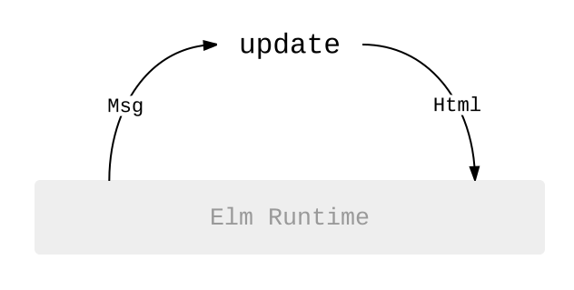
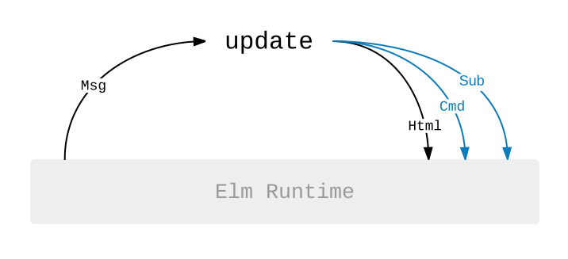

The Elm Architecture + Effects
The last section showed how to handle all sorts of user input. You can think of those programs like this:

From our perspective, we just receive messages and produce new Html to get rendered on screen. The “Elm Runtime” is sitting there behind the scenes. When it gets Html it figures out how to render it on screen really fast. When a user clicks on something, it figures out how to pipe that into our program as a Msg. So the Elm Runtime is in charge of doing stuff. We just transform data.
This section builds on that pattern, giving you the ability to make HTTP requests or subscribe to messages from web sockets. Think of it like this:

Instead of just producing Html, we will now be producing commands and subscriptions:
Commands — A
Cmdlets you do stuff: generate a random number, send an HTTP request, etc.Subscriptions — A
Sublets you register that you are interested in something: tell me about location changes, listen for web socket messages, etc.
If you squint, commands and subscriptions are pretty similar to Html values. With Html, we never touch the DOM by hand. Instead we represent the desired HTML as data and let the Elm Runtime do some clever stuff to make it render really fast. It is the same with commands and subscriptions. We create data that describes what we want to do, and the Elm Runtime does the dirty work.
Don’t worry if it seems a bit confusing for now, the examples will help! So first let’s look at how to fit these concepts into the code we have seen before.
Extending the Architecture Skeleton
So far our architecture skeleton has focused on creating Model types and update and view functions. To handle commands and subscriptions, we need to extend the basic architecture skeleton a little bit:
-- MODEL
type alias Model =
{ ...
}
-- UPDATE
type Msg = Submit | ...
update : Msg -> Model -> (Model, Cmd Msg)
update msg model =
...
-- VIEW
view : Model -> Html Msg
view model =
...
-- SUBSCRIPTIONS
subscriptions : Model -> Sub Msg
subscriptions model =
...
-- INIT
init : (Model, Cmd Msg)
init =
...
The first three sections are almost exactly the same, but there are a few new things overall:
The
updatefunction now returns more than just a new model. It returns a new model and some commands you want to run. These commands are all going to produceMsgvalues that will get fed right back into ourupdatefunction.There is a
subscriptionsfunction. This function lets you declare any event sources you need to subscribe to given the current model. Just like withHtml MsgandCmd Msg, these subscriptions will produceMsgvalues that get fed right back into ourupdatefunction.So far
inithas just been the initial model. Now it produces both a model and some commands, just like the newupdate. This lets us provide a starting value and kick off any HTTP requests or whatever that are needed for initialization.
Now it is totally okay if this does not really make sense yet! That only really happens when you start seeing it in action, so lets hop right into the examples!
Aside: One crucial detail here is that commands and subscriptions are data. When you create a command, you do not actually do it. Same with commands in real life. Let's try it. Eat an entire watermelon in one bite! Did you do it? No! You kept reading before you even thought about buying a tiny watermelon.
Point is, commands and subscriptions are data. You hand them to Elm to actually run them, giving Elm a chance to log all of this information. In the end, effects-as-data means Elm can:
- Have a general purpose time-travel debugger.
- Keep the "same input, same output" guarantee for all Elm functions.
- Avoid setup/teardown phases when testing
updatelogic.- Cache and batch effects, minimizing HTTP connections or other resources.
So without going too crazy on details, pretty much all the nice guarantees and tools you have in Elm come from the choice to treat effects as data! I think this will make more sense as you get deeper into Elm.